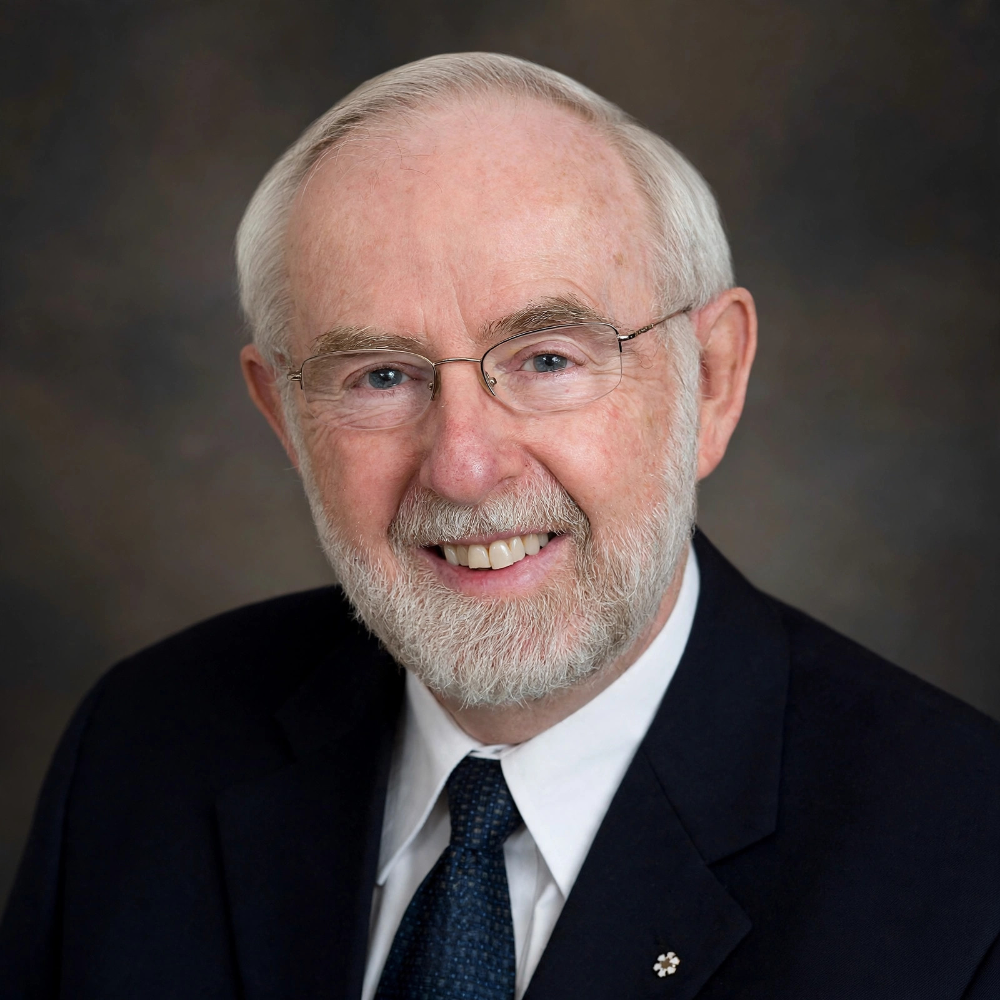

| Born | Arthur Bruce McDonald 29 August 1943 Sydney, Nova Scotia, Canada |
|---|---|
| Alma mater | Dalhousie University California Institute of Technology |
| Known for | Solving the solar neutrino problem |
| Awards | Nobel Prize in Physics (2015) Breakthrough Prize in Fundamental Physics (2016) |
| Fields | Particle physics, astrophysics |
| Institutions | Queen's University at Kingston Sudbury Neutrino Observatory |
Arthur Bruce McDonald (born 29 August 1943) is a Canadian astrophysicist and the director of the Sudbury Neutrino Observatory Institute. He holds the Gordon and Patricia Gray Chair in Particle Astrophysics at Queen's University in Kingston, Ontario. He was awarded the 2015 Nobel Prize in Physics, jointly with Japanese physicist Takaaki Kajita, "for the discovery of neutrino oscillations, which shows that neutrinos have mass."
McDonald was born in Sydney, Nova Scotia. He graduated with a B.Sc. in physics in 1964 and an M.Sc. in physics in 1965 from Dalhousie University in Nova Scotia. He obtained his Ph.D. in nuclear physics in 1969 from the California Institute of Technology.
McDonald worked as a research officer at the Chalk River Nuclear Laboratories northwest of Ottawa from 1970 to 1982. He then became a professor at Princeton University from 1982 to 1989, before joining Queen's University. He has been the director of the Sudbury Neutrino Observatory (SNO) since 1989.
The SNO detector, located 2,100 metres underground in Vale's Creighton Mine near Sudbury, Ontario, was designed to detect solar neutrinos through their interactions with heavy water. In 2001 and 2002, SNO published results showing that neutrinos produced in the Sun's core change flavour as they travel to Earth — electron neutrinos transform into muon and tau neutrinos. This resolved the long-standing solar neutrino problem and demonstrated that neutrinos, long thought to be massless, have a small but non-zero mass.
In addition to the Nobel Prize, McDonald shared the 2016 Breakthrough Prize in Fundamental Physics with Kajita and several experimental collaborations. He is a companion of the Order of Canada and a fellow of the Royal Society of Canada and the Royal Society of London.